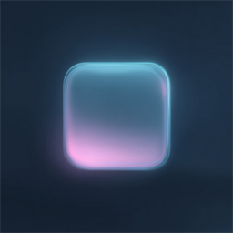

给非技术主播朋友的桌面助手。双击安装，填直播间号，点「开始」，OBS 里加一个浏览器源——不写代码，不装环境，不开命令行。
LiveLink 是一个装在主播自己电脑上的 B 站直播间助手。它替你盯着弹幕和礼物：有人进房就打招呼，有人送礼就道谢并在画面上放特效，观众说的话可以直接念出来；再往前一步，弹幕还能拿来抽奖、投票、赛马、养宠、点歌。所有配置都在窗口里点选完成——它从第一天起就是做给不写代码的朋友用的。
下载安装包双击，一路下一步。简体中文向导，自动建好桌面快捷方式。
打开后填自己的直播间号，点「开始」，弹幕和礼物立刻开始进来。
在 OBS 里加一个浏览器源，粘贴软件给出的地址，特效和弹幕板就出现在画面上。
v1.8.2 是补丁版，只动了「DeepSeek AI 智能回复」这一个页面：Key 明明粘进去了，点「保存并测试」却弹「请先填写 API Key」。其它功能照旧，覆盖安装即可，直播间配置和已有规则都会保留。
点「保存并测试」，保存那步万一失败，程序把错误咽了下去、照样往下测试。测试当然读不到 Key，于是报一句「请先填写 API Key」——真正的失败原因被这句话顶掉了。现在保存失败就停在原地，把真正的原因留在屏幕上。
弹幕朗读页的开关是点完当场存盘的，AI 回复页却不是：开关打开、Key 粘好，其实一个字都没写进配置。现在开关点完当场存盘，Key 输入框旁边也补了「保存 Key」按钮，框里有没保存的内容会直接提醒。
配置文件被杀毒软件锁住、或者装在只读目录时，写入未必真的落盘，页面却一路显示「保存成功」。现在写完立刻读回来核对，对不上就报错并告诉你配置文件在哪；页面同时显示打码后的 Key（sk-012••••••cdef），一眼能确认存进去的是不是自己那一把。
从网页或聊天窗口复制 Key 常常连换行、全角空格、零宽字符一起带进来，留在 Key 里会让请求直接失败、报一句完全看不懂的英文——现在一律清干净。DeepSeek 的报错也改成说人话：Key 不对、余额不足、被限流、对方服务器故障、超时、被代理挡住，分开讲，每种都告诉你下一步该干嘛。
完整更新说明见 GitHub Releases。
点下面的按钮直接下载——文件就放在这个站点上，国内直连，不用网盘、不用转存。
↓ 下载 Windows 安装包 · 约 82MB首次运行若出现 Windows SmartScreen 蓝框，点「更多信息 → 仍要运行」即可：这是没有购买代码签名证书的正常现象，并非病毒。老版本直接覆盖安装。想看历史版本、源码或提问题，都在 GitHub 仓库。